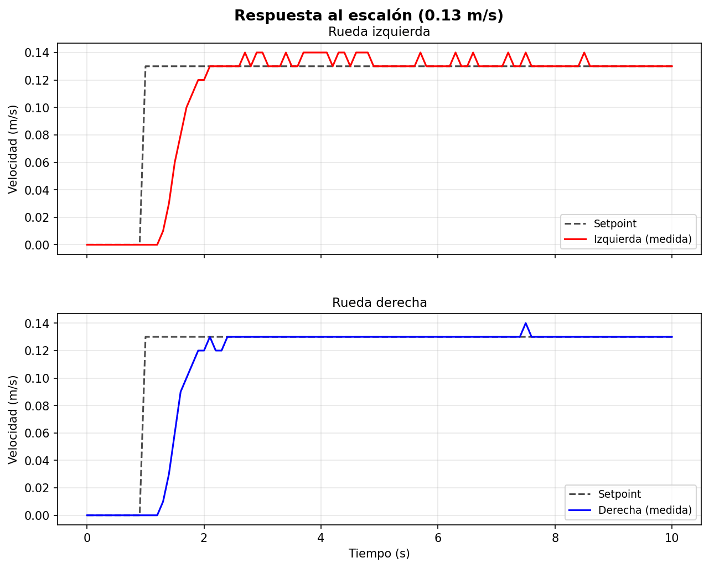
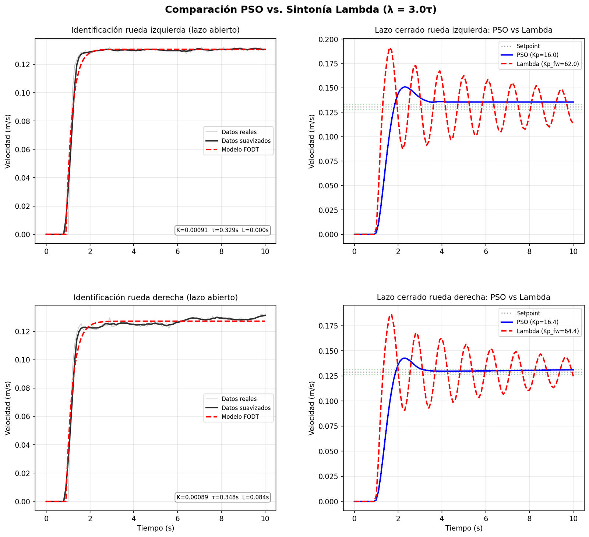
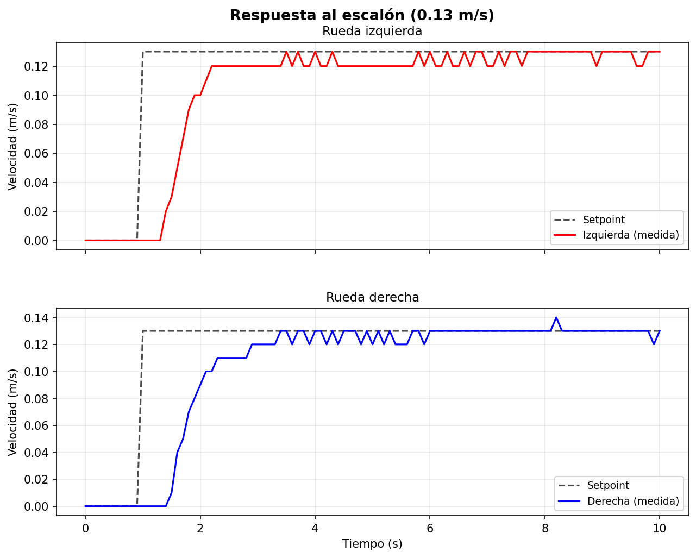

Tiempo continuo
u(t) = P·e(t) + I·∫e(t)dt + D·de(t)/dt
La integral acumula área en el tiempo. La derivada calcula la pendiente instantánea.
Cómo funciona
Pedirle a una rueda que gire a 0,13 m/s no basta. Hay que medir, comparar y corregir decenas de veces por segundo. Este tema explica cómo lo hace el Arduino, qué encontré al leer su código y cómo busqué las ganancias con un enjambre de partículas.

Cada rueda tiene su propio lazo de control en el Arduino. La ley heredada del firmware se llama PID, pero al leer su código vi que opera como un PI incremental, sin acción derivativa. Sus ganancias partieron de una búsqueda con enjambre de partículas sobre un modelo de cada rueda y las terminé de ajustar en el robot real. Con ellas, ambas ruedas siguen 0,13 m/s sin sobreimpulso apreciable dentro de lo que la medición alcanza a ver.
Si a un motor se le da siempre la misma tensión, su velocidad cambia con la carga, la batería y el roce. Un lazo cerrado lo resuelve midiendo. Compara la velocidad que se quiere con la que se mide, y la diferencia, llamada error, decide cuánto subir o bajar la tensión media que recibe el motor 1.
El controlador más usado para esto es el PID, que combina tres reacciones al error 2. La proporcional mira el presente y empuja más mientras más lejos está la meta. La integral mira el pasado, suma el error acumulado y sigue empujando mientras quede una diferencia, aunque sea pequeña. Y la derivativa mira la tendencia del error, o de la medición según la implementación, para amortiguar los cambios.
Es la diferencia que queda después de que la rueda se estabiliza, no el error grande del arranque. Si se piden 0,130 m/s y el promedio final es 0,128 m/s, quedan 0,002 m/s de error. En la tesis ese promedio se calcula desde los 7 s 1. La acción integral busca corregir diferencias persistentes, siempre dentro de los límites del motor y de la medición.
En los ejemplos también puedes activar una zona muerta: una señal pequeña todavía no alcanza a mover la rueda. Más adelante se muestra su diferencia con la banda del error.
La serie de MATLAB sobre control PID explica con animaciones qué hace cada término y cómo se lleva a un microcontrolador. Fuente 9
El Arduino cuenta los ticks del encoder, compara con la referencia, calcula la corrección y actualiza el PWM. Esa secuencia es un ciclo de control. Después mantiene esa orden hasta el siguiente cálculo. La rueda sigue moviéndose entre ciclos.
Frecuencia dice cuántos cálculos se hacen en un segundo; período dice cuánto tiempo hay entre ellos. Son inversos: T = 1/f. A 30 Hz, T = 1/30 s = 0,03333 s = 33,33 ms. El firmware calcula 1000 / 30 como entero y programa 33 ms, por eso aquí se habla de unos 30 ciclos/s, no de una frecuencia medida exacta 10.
| Reloj | Qué ocurre | Intervalo |
|---|---|---|
| Control de la rueda | Actualiza la corrección y el PWM, a 30 Hz nominales | 33 ms programados |
| Captura para identificar el modelo | Registra una muestra del ensayo, a 10 Hz | 100 ms = 0,1 s |
| Conmutación del PWM | Enciende y apaga el driver para regular la tensión media | Otro reloj; no es el ciclo de 33 ms |
u(t) = P·e(t) + I·∫e(t)dt + D·de(t)/dt
La integral acumula área en el tiempo. La derivada calcula la pendiente instantánea.
u[k] = P·e[k] + I·T·Σe[j] + D·(e[k]−e[k−1])/T
La integral se aproxima con sumas y la derivada con diferencias entre muestras. Aquí k identifica el ciclo y T su período.
Forma didáctica posicional, con integración rectangular y diferencia hacia atrás; en una implementación se filtra normalmente la derivada. P, I y D nombran acciones convencionales para no confundirlas con las variables Kp, Ki y Kd del firmware 12.
Esta es otra elección, independiente de continuo o discreto. En un PID discreto posicional se calcula el PWM completo: u[k]. En uno incremental se calcula el cambio: Δu[k], y se guarda u[k] = u[k−1] + Δu[k]. Ambas formas pueden representar el mismo PID si las ecuaciones se transforman correctamente. Ninguna evita el windup por sí sola: hay que tratar la saturación y la memoria 2.
ROSArduinoBridge es el firmware abierto que ejecuta el Arduino. El código base llama Kp, Ki y Kd a sus ganancias, pero hay que mirar la ecuación y la memoria para saber qué acción producen 10. Primero calcula una corrección y después la suma a la salida anterior. Esa segunda operación añade una acumulación a cada término.
Corrección: Δu[k] = (Kp·e[k] − Kd·(m[k]−m[k−1]) + ITerm[k−1]) / Ko
Salida: u[k] = limitar(u[k−1] + Δu[k], −255, 255)
Memoria aparte: ITerm[k] = ITerm[k−1] + Ki·e[k], solo si la salida no toca el tope
e: error en ticks/ciclo; m: ticks contados durante un ciclo; u y Δu: PWM; ITerm: unidades internas del numerador. El firmware además trunca y aplica una banda al error. La fórmula describe el orden de actualización, antes de esos cortes.| Qué se observa | PID tradicional | Ley usada en el robot |
|---|---|---|
| Acción proporcional | P multiplica el error: referencia − medición | Kd produce una acción proporcional negativa sobre la medición al sumar sus diferencias |
| Acción integral | I acumula el error una vez | Kp añade el error a la salida, que se guarda y se vuelve a incrementar |
| Acción derivativa efectiva | D responde a la tendencia del error; también puede derivar la medición | No queda una derivada efectiva: las diferencias de medición se acumulan y dan una acción proporcional |
| Cuando cambia la referencia | La acción P sobre el error cambia de inmediato | No hay ese salto proporcional de la referencia; el nuevo error sí entra en la acumulación mediante Kp |
| Variable llamada Ki | No es comparable directamente con I | Acumula error en ITerm y luego vuelve a acumularlo en la salida: dos sumas, casi anuladas por los enteros |
Si cada ciclo añade 1 PWM por un error que persiste, la contribución guardada va 1, 2, 3… PWM. El nombre Kp no la hace proporcional: la memoria de salida convierte esos incrementos en una integral.
Si la medición sube y luego se mantiene, sus cambios dejan de aportar. La contribución acumulada depende de cuánto cambió la medición desde el inicio, no de su pendiente actual.
El error se acumula primero en ITerm. Ese ITerm se añade a la salida en los ciclos siguientes, así que vuelve a integrarse. Los enteros eliminan muchos de sus pequeños incrementos.
Si Ki es cero, la referencia permanece fija y se ignoran los cortes, la ley equivale a un PI incremental: P efectivo = Kd/Ko e I efectivo por ciclo = Kp/Ko, en la escala de ticks/ciclo 2. Con referencia variable, la referencia entra solo en la acción integral. En las ganancias finales Ki no es literalmente cero, pero los enteros anulan su aporte en la derecha para los errores del ensayo y lo restringen en la izquierda. Por eso describo una operación esencialmente PI, no un PID completo.
Tres motivos aparecen en la guía: la compatibilidad con diffdrive_arduino, el tratamiento de los topes y el seguimiento de la referencia en los ensayos. Otros dos criterios técnicos son mantener los ensayos comparables y considerar las pruebas adicionales de una nueva ley. Estos últimos son un análisis de la decisión a partir de la evidencia disponible.
| Argumento | Qué respalda y cuál es su límite |
|---|---|
| Interfaz ya integrada | Conservar comandos y lectura de encoders evitó cambiar la comunicación. El protocolo no obliga a conservar la fórmula de doPID. |
| Protecciones ya presentes | Se guarda el PWM limitado y se congela ITerm al llegar al tope. Estas protecciones reducen el windup. También pueden implementarse en un PID tradicional. |
| Respuesta medida en el robot | Los ajustes finales siguieron 0,13 m/s dentro de la resolución de medida. Eso respalda conservar una solución funcional en ese punto; no demuestra que sea la mejor ley. |
| Continuidad de la evidencia | Como criterio técnico, mantener la ley permite asociar las capturas y las ganancias a la misma implementación. Reescribirla exige repetir la validación para poder comparar. |
| Trabajo adicional que habría que validar | Un PID nuevo necesita revisar la escala de ganancias, el período, los estados, los enteros, el filtrado derivativo y la recuperación al saturarse. Es trabajo de diseño y prueba, no una imposibilidad del Arduino. |
Ese es el windup: acumular una corrección que el actuador ya no puede aplicar. La protección depende de los topes y del manejo de la memoria, no de llamar «incremental» al controlador 11. Más abajo puedes liberar la rueda y observar la recuperación.
No se cambió esta ley, por lo que todos los resultados pertenecen a ella. El objetivo que pedía implementar un PID se declara cumplido en forma parcial. Una comparación con un PID estándar a varias velocidades sigue siendo trabajo futuro.
Una ganancia se interpreta por la ecuación y por la memoria que la rodea.
El Arduino Nano guarda varios resultados intermedios como números enteros. Las ganancias se aplican con decimales, pero el error, el aumento de la salida y el término integral se recortan hacia cero al guardarse 1. Si el incremento calculado es 0,9 PWM, se guarda 0 PWM: la orden al motor no cambia en ese ciclo. No se guarda ese 0,9 para sumarlo después.
Esto tiene un efecto directo sobre Ki. En la rueda derecha, con Ki de 0,001, el producto de Ki por el error solo llegaría a una unidad interna desde ITerm=0, con un error positivo de al menos 1000 ticks/ciclo, muy superiores a los del ensayo, así que su término integral queda siempre en cero. En la izquierda, con Ki de 0,075, desde ITerm=0 solo crece con errores positivos de al menos 14 ticks/ciclo, cerca de 0,045 m/s, lo que pasa sobre todo al arrancar 1.
En el firmware original Ki y el error eran enteros, así que su producto no tenía decimales que perder; la división por Ko sí podía truncar el incremento de salida. Al pasar a ganancias con decimales, el estado integral siguió siendo un entero de 16 bits, y ahí aparecieron las pérdidas. Es un error muy común al adaptar código embebido, y por eso tiene su propia sección en Lecciones de ingeniería.
Si ITerm ya es distinto de cero, el corte de la suma completa también importa: un error negativo pequeño puede bajar esa memoria al truncar hacia cero. El umbral de 14 ticks describe el crecimiento desde cero con error positivo, no todos los cambios posibles de ITerm.
El motor puede recibir como máximo ±255 PWM. Si la rueda está trabada, sigue habiendo error de velocidad, pero aumentar una orden interna por encima de ese máximo no da más fuerza. Un integrador sin protección sigue acumulando. Al liberar la rueda, puede mantener el PWM en el tope aunque la velocidad ya haya alcanzado la referencia: esa memoria excesiva tarda en descargarse.
Para verlo, hay que mirar la velocidad que observas y la orden que se calcula y se aplica. No son dos velocidades: una es la respuesta física en m/s; las otras son señales PWM dentro del controlador y hacia el motor.
Se limita la nueva salida a ±255 antes de guardarla, de modo que el exceso calculado no pasa a la memoria de salida. Además, ITerm deja de actualizarse cuando la salida toca cualquiera de los topes. Esto es integración condicional en ese estado aparte 10.
El firmware congela ITerm en ambos topes; una protección convencional más completa también considera si el error ayuda a salir de la saturación. No se demuestra aquí que esta estrategia sea óptima ni que elimine cualquier sobreimpulso. Un PID tradicional puede usar integración condicional o realimentar la diferencia entre la señal pedida y la aplicada para limitar su memoria 11.
En el conjunto driver y motor, la zona muerta física se refiere a un rango de PWM que no consigue mover la rueda. En el firmware, la banda muerta del error es una decisión del software para ignorar diferencias pequeñas. La primera usa PWM; la segunda, ticks/ciclo. No son intercambiables.
Para buscar ganancias sin probar a ciegas en el robot, primero se identificó un modelo de cada rueda. Se aplicó un escalón de PWM de 143 sin control y se registraron los encoders cada 0,1 s durante 10 s. Con esa respuesta se ajustó un modelo de primer orden con retardo, conocido como FOPDT, que resume una rueda con tres números. Cuánto responde, qué tan rápido y con cuánta demora 3.
| Parámetro del modelo | Rueda izquierda | Rueda derecha |
|---|---|---|
| Ganancia, cuánto responde (m/s por unidad de PWM) | 0,000913 | 0,000890 |
| Constante de tiempo, qué tan rápido | 0,3291 s | 0,3485 s |
| Retardo, cuánta demora | 0,0001 s | 0,0692 s |

Que las dos ruedas tengan modelos distintos importa. Cada modelo permite buscar y evaluar ganancias propias para esa rueda, en vez de suponer que ambas responderán igual.
La optimización por enjambre de partículas, o PSO, se inspira en cómo se mueve una bandada de aves, es decir, un grupo de pájaros que se desplaza en conjunto 4. Cada partícula es un candidato, aquí un trío de ganancias. En cada generación, cada partícula se mueve combinando tres impulsos. Su velocidad anterior, la atracción hacia el mejor punto que ella misma encontró y la atracción hacia el mejor punto de todo el enjambre. No necesita derivadas ni un modelo exacto, solo poder evaluar qué tan bueno es cada candidato. Por eso es útil cuando se buscan varias ganancias a la vez.
El script que escribí combina dos mejoras conocidas. Un factor de constricción de 0,7298, el valor que entrega la fórmula de Clerc y Kennedy con coeficientes de 2,05 5, y un peso de inercia que baja de forma lineal con las generaciones, mecanismo propuesto por Shi y Eberhart 6. Usa 50 partículas y 150 generaciones. El costo de cada candidato es el error cuadrático medio de la velocidad simulada más una penalización por sobreimpulso que pesa el triple 1. Como antecedente, Gökçe y otros usaron PSO para sintonizar el PID de un robot móvil agrícola 7.
Cargué en el robot las ganancias sugeridas por el PSO y aparecieron dos comportamientos que el modelo no anticipaba. La rueda izquierda se quedaba un escalón de medición por debajo de la referencia, y la derecha subía por tramos, con una detención cerca de 0,11 m/s. La explicación propuesta es que el modelo de primer orden no incluye la zona muerta del driver 1. Desliza el control para comparar ambas respuestas sobre los mismos ejes.

Ganancias del PSOGanancias finalesSubí Kp para atravesar más rápido la zona muerta, lo que en esta ley acelera el crecimiento de la salida. Eso, sobre una velocidad medida en escalones, volvió excesiva la acción de Kd, que bajé. También subí Ki de la izquierda. En esta implementación su aporte crece sobre todo durante el arranque, cuando el error positivo alcanza al menos 14 ticks/ciclo; no se puede atribuir la corrección estacionaria solo a esa ganancia. El aporte del PSO fue el de una semilla de búsqueda y no el de un ajuste final validado por sí solo 1. Esto muestra el límite de cualquier optimización, que solo es tan buena como el modelo sobre el que busca.
| Ganancia | PSO izquierda | Final izquierda | PSO derecha | Final derecha |
|---|---|---|---|---|
| Kp | 12,48 | 16,00 | 10,10 | 16,42 |
| Kd | 34,69 | 20,30 | 36,70 | 20,05 |
| Ki | 0,00001 | 0,075 | 0,00001 | 0,001 |
| Ko | 50 | 50 | 50 | 50 |
El PSO parte de números al azar y la clase usada no fija una semilla aleatoria, así que al repetir el script se obtienen parámetros algo distintos. Conservé la salida exacta de la ejecución usada 1. En cualquier trabajo con métodos aleatorios conviene fijar la semilla y guardar la salida, para que otra persona pueda llegar al mismo resultado.
Con las ganancias finales, ambas ruedas alcanzan la referencia de 0,13 m/s en el robot real, y la referencia se alcanza cerca de un segundo antes que con las ganancias del PSO 1.
| Indicador | Rueda izquierda | Rueda derecha |
|---|---|---|
| Velocidad estacionaria medida, desde los 7 s | 0,128 m/s | 0,130 m/s |
| Error estacionario | 0,002 m/s | 0,000 m/s |
| Tiempo de subida del 10 al 90 % | 0,8 s | 1,4 s |
| Sobreimpulso máximo | no significativo | no significativo |
El firmware informa la velocidad con dos decimales, en pasos de 0,01 m/s, cerca de un 7,7 % de la referencia. Un sobreimpulso pequeño puede quedar oculto por el redondeo, y por eso la frase correcta es sin sobreimpulso apreciable dentro de la resolución de medida. Por lo mismo no se informa un tiempo de establecimiento al 2 %. El 0,128 de la rueda izquierda es un promedio de muestras que oscilan entre dos pasos, no una medición más fina 1.
Evalué el control en un solo punto de operación, 0,13 m/s. En los giros sobre su eje, la referencia de cada rueda es de unos 10 ticks/ciclo en vez de unos 41 (10 y 40 si el comando m trunca a entero), y ahí las bandas muertas de 1 y 2 pulsos pesan mucho más. Extender la evaluación a otras velocidades y compararla con un PID incremental estándar es parte del trabajo futuro.
Incluí una comparación simulada entre las ganancias finales y una sintonía analítica llamada Lambda, sobre un modelo reidentificado. En esa simulación las ganancias finales muestran sobreimpulsos de 10,7 % a 15,6 %. Esos números vienen de un modelo sin zona muerta, sin bandas muertas asimétricas y sin los tipos enteros del firmware, así que no se comparan con la medición real. Es una comparación ilustrativa, y es la que muestra la figura del modelo más arriba.
El lazo cerrado es probablemente la idea de ingeniería más repetida del mundo.
El conductor fija una velocidad y el sistema ajusta el acelerador cuando el auto sube o baja una cuesta. Es el ejemplo de cabecera en el libro abierto de Åström y Murray.
Tiene una referencia de velocidad, una perturbación y un lazo que corrige, como cada rueda de este robot. Ver el caso completo.
Fuente 8